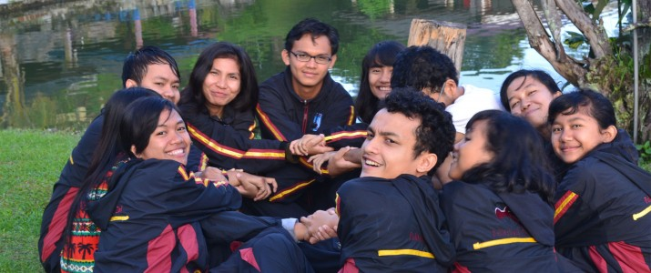
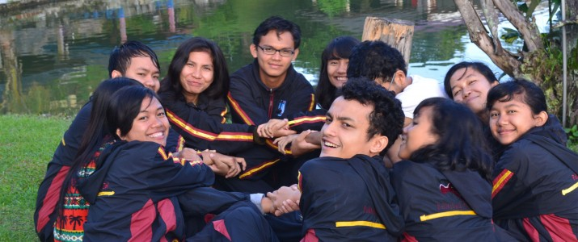

Program Studi IT Del
Program studi adalah kesatuan rencana belajar sebagai pedoman penyelenggaraan pendidikan akademik dan/atau profesional yang diselenggarakan atas dasar suatu kurikulum serta ditujukan agar mahasiswa dapat menguasai pengetahuan, keterampilan, dan sikap sesuai dengan sasaran kurikulum.
Pada tahun terakhir atau pada tingkat tiga, mahasiswa diberi pilihan untuk menempuh bidang studi yang sesuai dengan minat dan bakat yaitu Teknik Informatika, Teknik Informasi, dan Manajemen Informatika.
Kurikulum pendidikan tinggi adalah seperangkat rencana dan pengaturan mengenai isi maupun bahan kajian dan pelajaran serta cara penyampaian dan penilaiannya yang digunakan sebagai pedoman penyelenggaraan kegiatan belajar mengajar di perguruan tinggi.
Dua tahun pertama, seluruh mahasiswa mendapat pelajaran atau mata kuliah yang sama, hal ini bertujuan untuk pembekalan mahasiswa terhadap minat dan bidang studi yang diinginkan.
Diharapkan setelah lulus dari Institut Teknologi Del, mahasiswa dapat mempunyai kemampuan sebagai berikut: Mempunyai kemampuan di bidang informatika dan mampu mempertautkan dengan bidang industri, pemerintahan dan masyarakat luas baik pada tataran nasional maupun internasional. Mempunyai sikap selalu setapak lebih maju dalam upaya membentuk masa depan bangsa, melalui penerapan teknologi khususnya teknologi informasi. Merupakan tenaga profesional di bidang IT yang pintar dan terampil, juga berkelakuan baik, mempunyai hati dan mengasihi sesama.